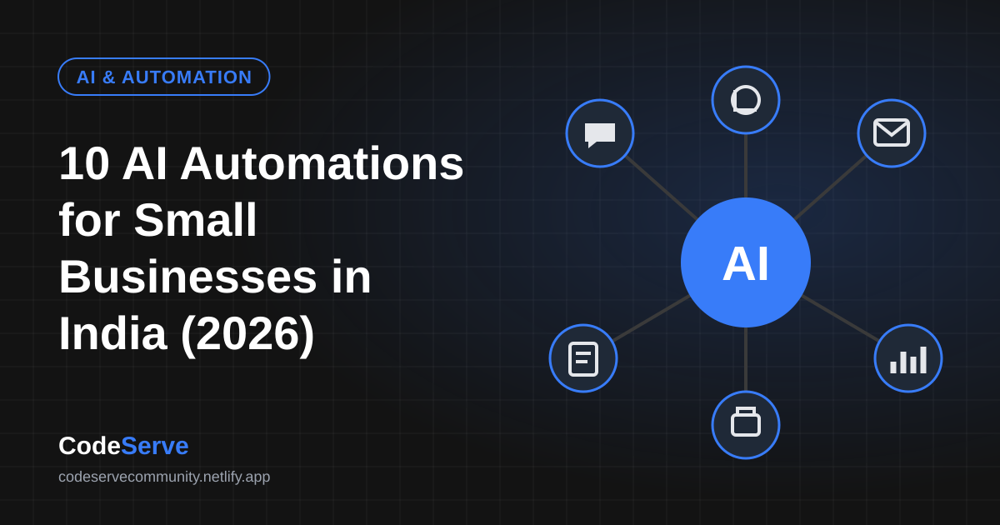
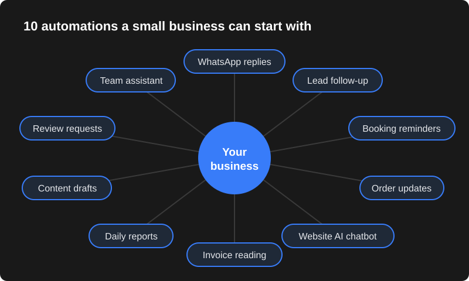

Before you start: automate the boring, repeated work
The best automations are not fancy. They take a task your team repeats many times a day — copying data, answering the same question, sending reminders — and do it automatically. A good test: if a task is repeated, rule-based and annoying, it is a good candidate.
Most of the ideas below use tools you may already have: WhatsApp, Google Sheets, your website and an AI model, connected through automation tools like n8n, Make or Zapier, or a little custom code.
You also don't need to automate everything at once. Many businesses get the biggest benefit from just one or two automations — usually around customer replies and follow-ups — because that is where slow responses cost real sales. Once those run smoothly, adding more becomes easy because your information, templates and tools are already organised.

1. Instant WhatsApp replies to common questions
Customers ask the same things again and again: price, timings, location, availability. An automated WhatsApp setup can answer these instantly with quick-reply buttons, and an AI assistant can handle more natural questions in English, Hindi or Telugu.
Example: a coaching centre answers "fees", "batch timings" and "demo class" enquiries at 11 pm without anyone picking up the phone. See our WhatsApp automation service.
2. Lead capture and instant follow-up
Leads from your website form, Facebook or Instagram ads and WhatsApp can be saved automatically to one Google Sheet or CRM, assigned to a salesperson, and followed up with a WhatsApp or email message within a minute.
Why it matters: the faster you respond, the more likely the customer is still interested — and automation never forgets a follow-up.
3. Appointment and booking reminders
Clinics, salons, gyms and consultants lose money when customers forget appointments. Automatic confirmations and reminders a day and an hour before help reduce no-shows, and let customers reschedule with one tap.
4. Order, payment and delivery updates
For WooCommerce or Shopify stores, every order can trigger an automatic WhatsApp confirmation, a payment link if unpaid, and shipping updates. This reduces "where is my order?" calls and builds trust, especially for cash on delivery orders.
5. An AI chatbot on your website
An AI chatbot trained on your services, prices and FAQs can answer visitors 24/7, collect their name and number, and pass serious enquiries to your team. Unlike old-style bots, it understands questions phrased in different ways.
6. Reading invoices, bills and forms automatically
AI can read PDFs and photos of invoices, purchase bills, KYC forms or resumes and extract the important fields — vendor name, amount, date, GSTIN — into Excel, Google Sheets or your accounting software. Your team only checks the results instead of typing everything.
7. Daily sales and business reports
Instead of preparing reports manually, automation can collect sales, leads and expenses from different tools and send the owner a short summary every morning on WhatsApp or email. AI can add a plain-language note such as which product sold best and which leads are still pending.
8. Social media and product content drafts
AI tools can draft product descriptions, Instagram captions, festival offer messages and blog outlines in your brand's tone. A person should still review and edit — but starting from a draft saves a lot of time.
9. Review requests and reputation monitoring
After a sale or appointment, an automatic message can thank the customer and ask for a Google review with a direct link. Reviews help your business appear higher on Google Maps. Automation can also alert you when a new review arrives so you can reply quickly.
10. An internal assistant for your team
Upload your price lists, policies, product manuals and SOPs to a private AI knowledge base. New staff can ask "what is our return policy?" or "which plan includes X?" and get answers based only on your documents, instead of disturbing senior staff.
Which automation should you start with?
| Business type | Start with | Then add |
|---|---|---|
| Online store | Order and delivery updates (#4) | Review requests (#9), daily reports (#7) |
| Clinic, salon, gym | Booking reminders (#3) | WhatsApp replies (#1), reviews (#9) |
| Real estate, education, services | Lead capture and follow-up (#2) | AI chatbot (#5), WhatsApp replies (#1) |
| Traders and distributors | Invoice reading (#6) | Daily reports (#7) |
| Agencies and consultants | Lead follow-up (#2) | Content drafts (#8), internal assistant (#10) |
A simple plan to launch your first automation
| Step | What to do |
|---|---|
| 1. Pick one problem | Write down the task that wastes the most time or loses the most customers. Example: "We reply to WhatsApp enquiries hours late." |
| 2. Map the steps | List what happens today, step by step: message arrives → someone reads it → checks price → replies → notes the lead. |
| 3. Decide what to automate | Automate the repeated steps; keep a person for decisions, negotiation and complaints. |
| 4. Prepare your information | Prices, FAQs, timings, policies and message templates in one document. |
| 5. Build and test | Set up the automation and test it with your own team before customers see it. |
| 6. Launch and review | Go live, then check results weekly and improve answers based on real conversations. |
Mistakes to avoid with AI and automation
- Automating a broken process. If your process is confusing for staff, automation will only make the confusion faster. Simplify first.
- No human backup. Customers get frustrated when a bot loops. Always offer a way to reach a person.
- Spamming customers. WhatsApp and email marketing should go only to people who agreed to receive messages. Spam can get your number restricted and damages your brand.
- Letting AI guess. Train AI on your real information and tell it to say "I'm not sure" rather than invent prices or policies.
- Set and forget. Prices, offers and timings change. Review your automations every month.
- Too many tools at once. Start with one or two connected tools. Add more only when the first automation is working well.
How to measure whether an automation is working
Automation should pay for itself. Before you launch, note a few simple numbers so you can compare after a month:
| Automation | What to measure |
|---|---|
| WhatsApp replies | Average reply time, number of enquiries answered after business hours |
| Lead follow-up | Leads that received a follow-up, leads converted to customers |
| Booking reminders | No-shows per week before and after |
| Order updates | "Where is my order?" calls per week |
| Document reading | Hours spent on manual data entry per week |
| Review requests | New Google reviews per month |
You don't need complicated dashboards — a simple sheet updated once a week is enough to see whether the automation is saving time or bringing more business.
What does it cost?
Costs depend on the tools and how much custom work is needed. For reference, CodeServe's WhatsApp automation plans are ₹7,999, ₹14,999 and ₹24,999 (one-time setup), and an AI website chatbot is ₹15,000. WhatsApp message charges and AI usage are billed by the providers based on how much you use them. Workflow automations are quoted based on the steps and apps involved.
Start with one automation that solves your biggest daily headache, measure the time it saves, then add the next. Our AI automation services page explains what we build.
Frequently asked questions
Do I need technical knowledge to use these automations?
No. Once set up, most automations run in the background. Your team uses familiar tools like WhatsApp and Google Sheets. You only need someone to check results and handle hand-overs.
Will AI replace my staff?
For most small businesses, AI removes repetitive work so staff can focus on sales, service and decisions. It works best as an assistant, with people handling important conversations.
Is my business data safe with AI tools?
Use reputable providers, share only what is needed, keep access limited and avoid putting sensitive personal data into tools that don't need it. A good partner will explain where your data goes.
Which tools are used for workflow automation?
Common choices are n8n, Make and Zapier, plus the WhatsApp Business API, Google Sheets and AI models. The right choice depends on your apps, volume and budget.